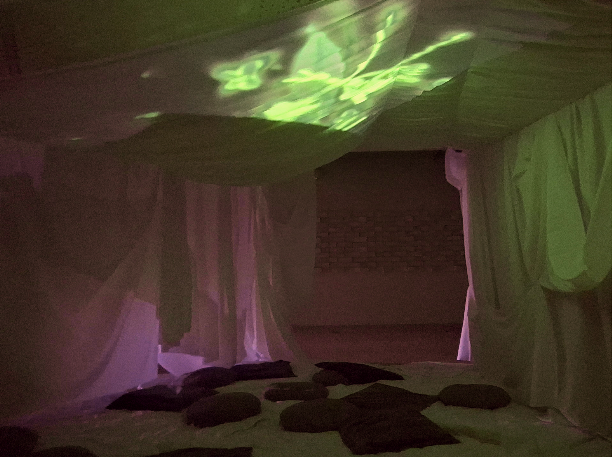
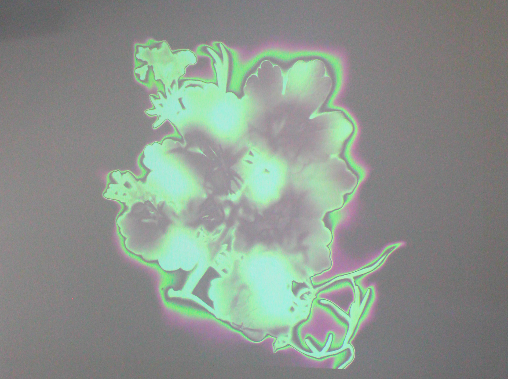
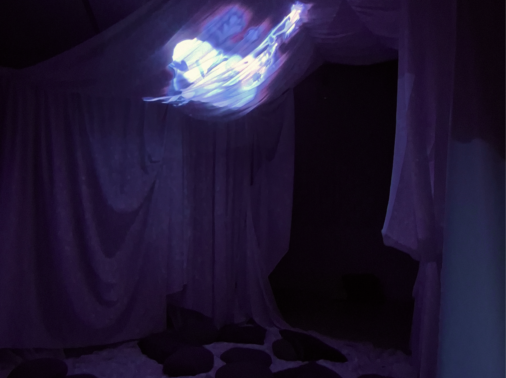
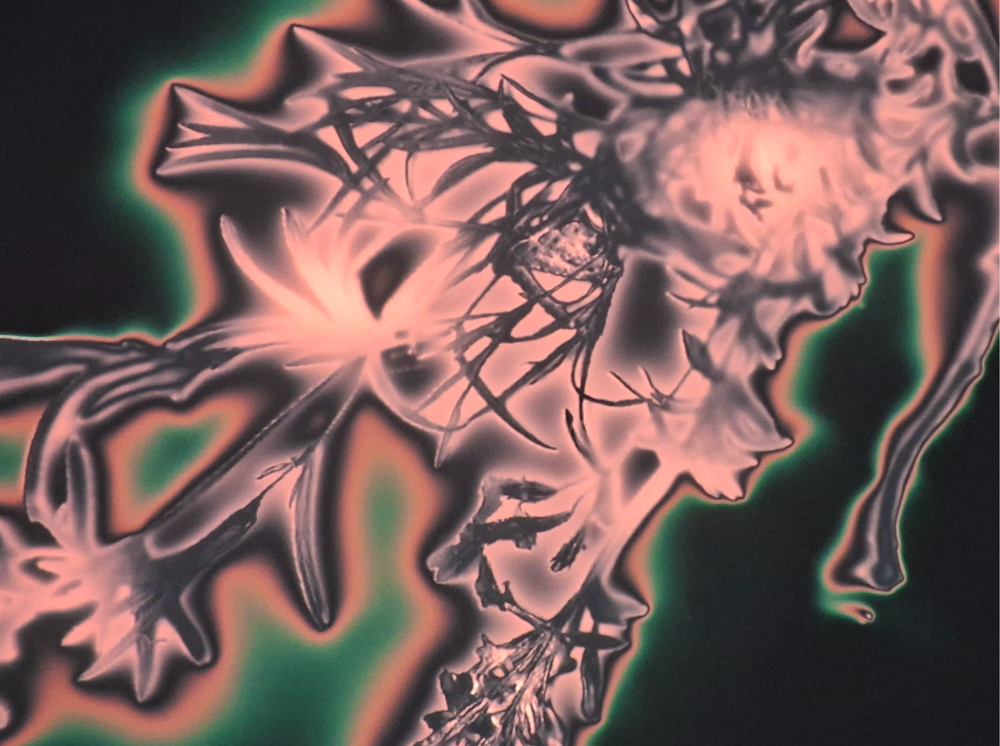
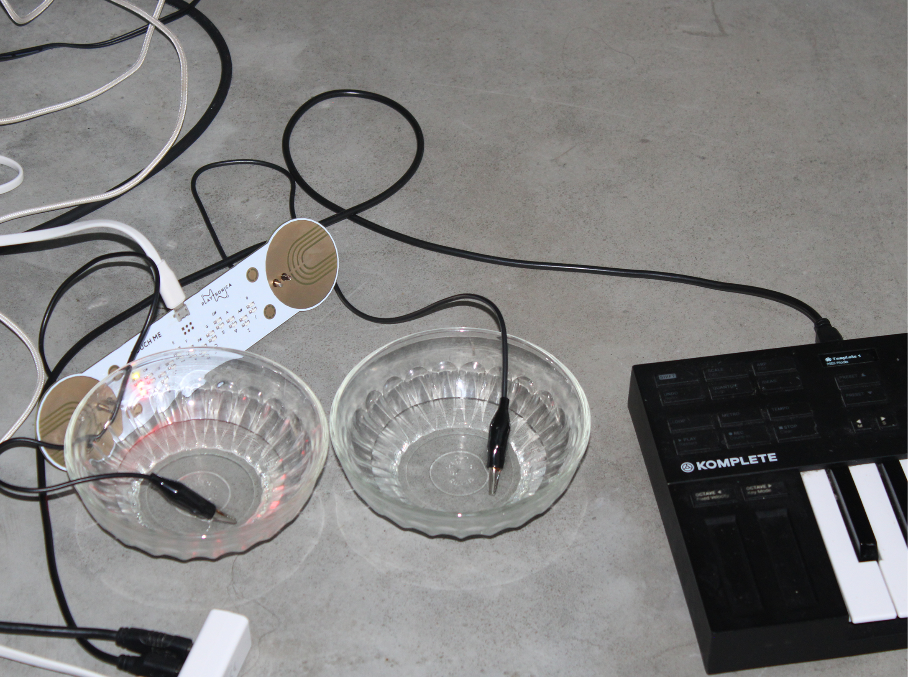
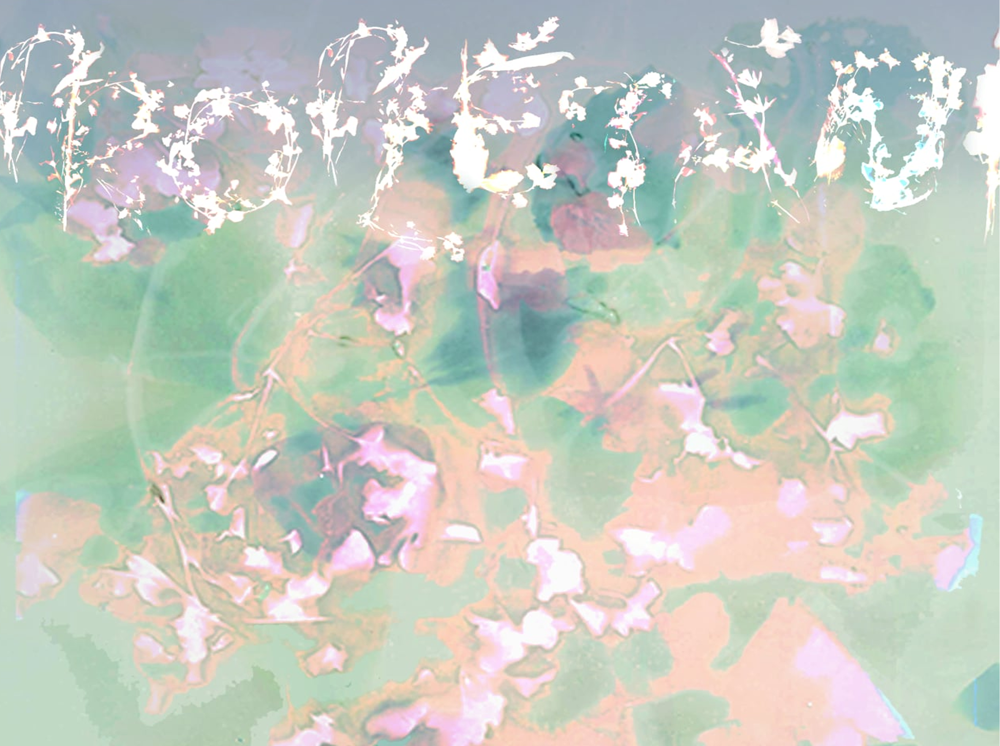
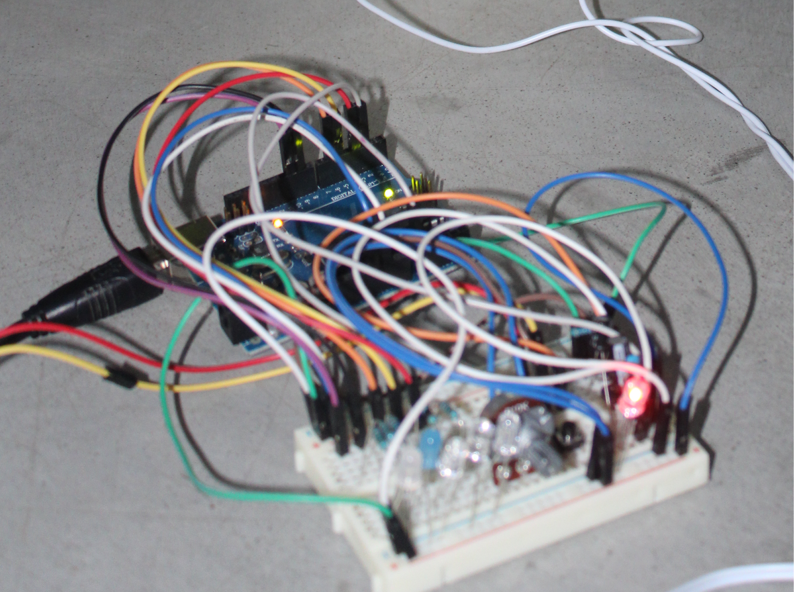

Proplétání/ Interweaving is an intimate, ambient EP that grew out of my own climate anxiety,
fear of the future and an interest in posthumanist, ecofeminist and sound studies.
Drawing from Pauline Oliveros and her practice of Deep Listening, Donna Haraway,
Ursula K. Le Guin and others.
What becomes possible when we understand nature not as scenery or resource, but as
a dense network of relationships that include us without centering us? What would
happen if we could listen deeply the way we can see?
Our World is burning. Yet, beneath the ash, something keeps insisting on growing.
The Earth is urgently and clearly showing us its limits, but unless we turn our
gaze away from technology and back toward people and nature, and unless we can
imagine a future in which human and nature are not in a hierarchical relationship
of exploitation, we can hardly move towards it.
Created using the sonification of plants, my own voice in poetry, ambient electronic
instruments and fieldrecordings from my home, from the places I grew up playing as a kid,
in our garden and close to a little stream of water. Using plants as collaborators, and
their data as something more than neutral code.
Created as part of the author’s diploma thesis at the University
of Ostrava, Faculty of Fine Arts and Music, Graphic Design and Visual Communication studio.






